Hardware Assembly Guide
Overview
This page contains instructions for the hardware assembly of the Automated Liquid Handler. Please refer to the 3D printing files and the Bill of Materials for the relevant parts.
Parts List
Gather all items.
3D Printed Parts

Bed Plate

Tip Disposal

Tip Ejector

Tip Catcher

Camera Mount

96 Well Plate Holder

Sample Holder

Frame
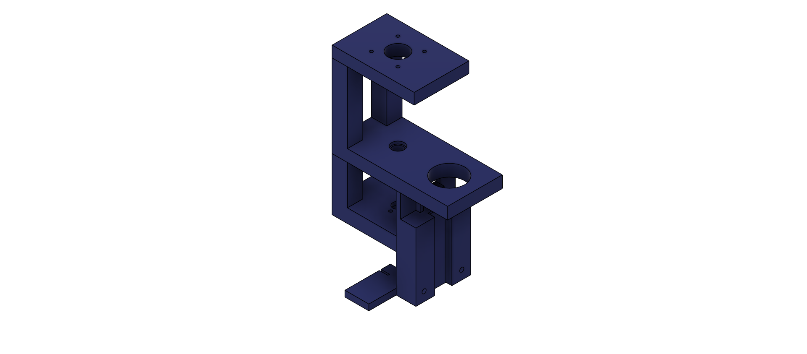
Frame Linear Actuator Mount

Pipette Bracket

Z-limit switch mount

Components
Linear Actuator

Stepper Motor

Linear Rail

Belt

Assembled PCB Board

Mechanical Fastners
M2x20mm x10
M3x20 x20
Head Cap Screws
3D-Printer Assembly
Assembling Ender 3 S1
Follow the Creality User Manual Instructions, but:
- Skip nozzle assembly and wire clamp installation
- Dismantle the nozzle assembly and keep the extruder sprite board (Figure 1) aside
- Install the Gantry Frame
- Do not install the filament spool holder and filament sensor
Modifying Existing Ender 3 S1
Dismantle your 3D printer as follow:
- Remove the nozzle assembly and wire clamp
- Dismantle the nozzle assembly and keep the extruder sprite board (Figure 1) aside
- Remove filament spool holder and filament sensor
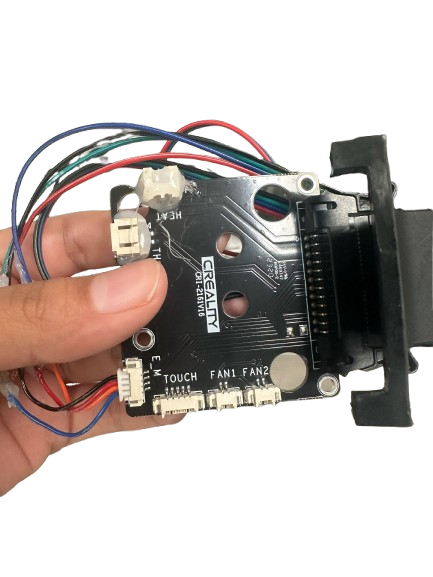
Figure 1: Ender 3 S1 Extruer Sprite Board
Installation of z-limit switch
You will need


Why we need a z-limit switch?
Traditionally, z-homing on the Ender 3 S1 is performed using a BL Touch sensor. This sensor operates strictly in the downward direction, meaning the Z = 0 reference point is only established when the probe physically contacts the print bed. This is not suitable for the purpose of our project as the bed plate is occupied by liquid handling appratus such as the well plates, sample solution holders, tip holder and the tip ejection module. These obstructions will prevent homing in downwards direction. Thus, a limit switch is installed on the top of the printer frame to perform z-homing upwards i.e. when the gantry moves upwards and hits the limit switch the Z_Max is recorded.
Installation steps
Remove the bottom casing of the printer.
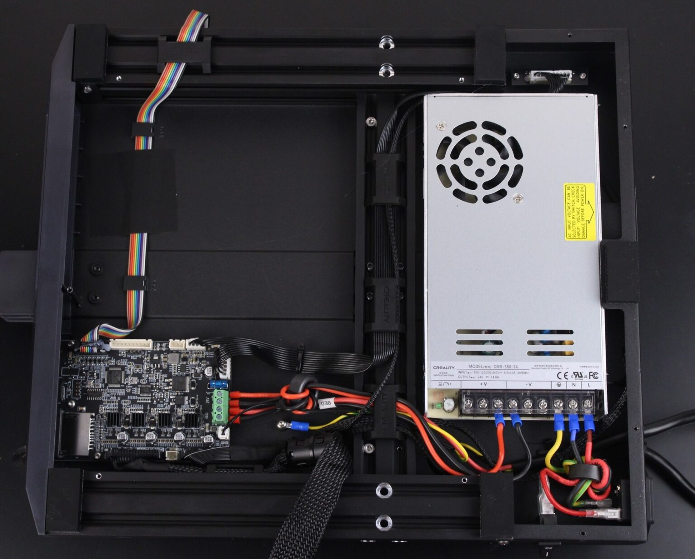
Figure 2: Unscrew bottom casing of the 3D printer.
Plug the z-limit switch into port J713 as shown in Figure 3A.

Figure 3: Left - Diagramatic representation and description of mainboard interfaces and connections, Right - Photograph of mainboard with z-limit switch pugged in
Important: Note down the version of the chip on the mainboard for your printer as it will be needed when compiling the custom Marlin Firmware.
Mounting the z-limit switch
The z-limit switch was mounted as shown in Figure 3.
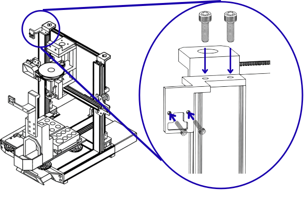
Figure 4: Left - location for mounting z-limit switch. Right - Close-up of the Z-limit switch installation The switch secures to the mount with two M3 x 6 mm screws; the mount fastens to the 3D printer's aluminium extrusion using two M5 x 10mm screws.
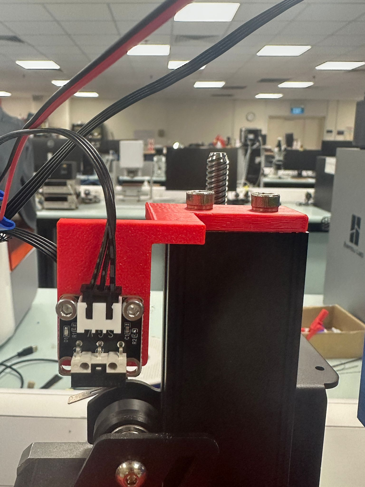
Figure : Photograph of z-limit switch installed.
Installation of the tip disposal and the 3D printed bed plate
The tip disposal and the 3D printer bed plate are fixed onto the aluminium heat bed of the printer using the screws of the manual leveling knobs.
Removing the magnetic base
You will need
The magnetic base is stuck onto the aluminium heat bed using a very strong adhesive. We suggest using strong pliers to rip off the magnetic base and an extra pair of hands to hold down the 3D printer while the other person removes the magnetic base.
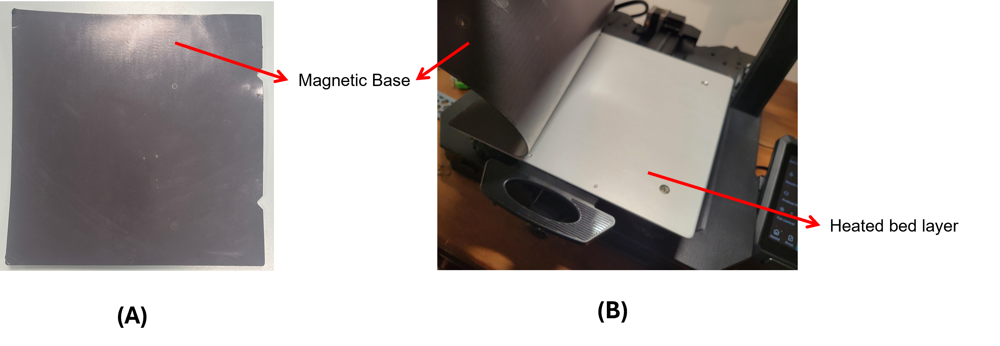
Figure 5: Magnetic base removal. (A) Photograph of magnetic base. (B) Magnetic base being removed.
Installing Bed Plate and Tip Disposal Module
You will notice that there already exist 4 screws that connect the manual levelling knobs to the aluminium bed. We will make use of these screws to fix our bed plate and tip disposal onto the aluminium bed.

Figure 6: Screw in bed plate and tip disposal. Replace springs with stand offs.
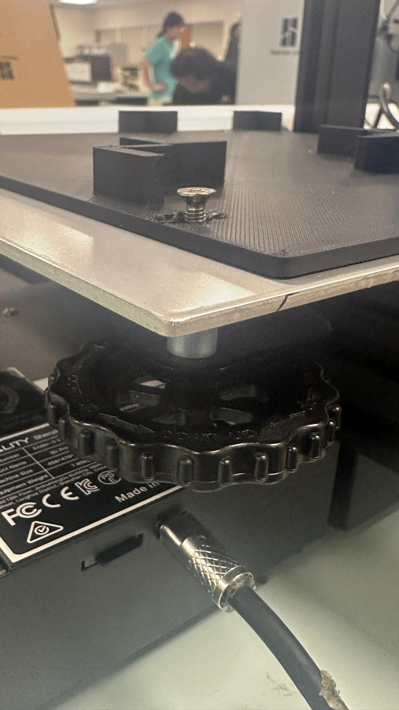
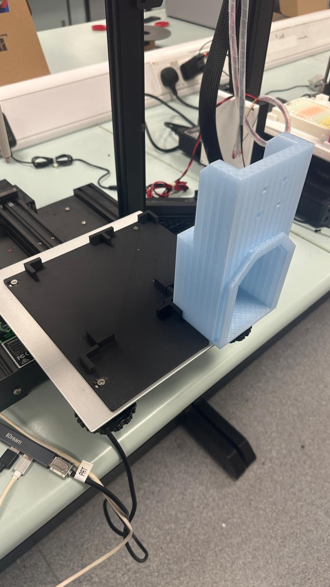
Installation of Tip Ejector and Camera Mount
You will need
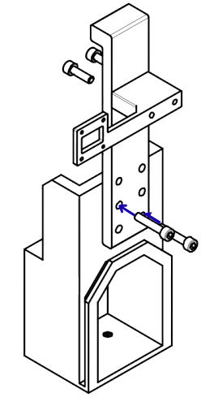
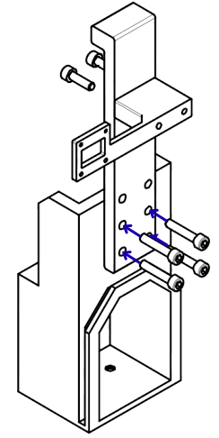
Installation of Frame
You will need
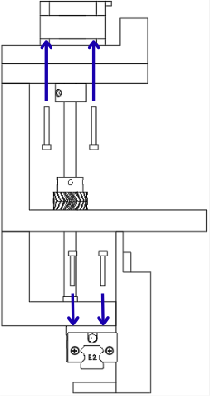
Add images